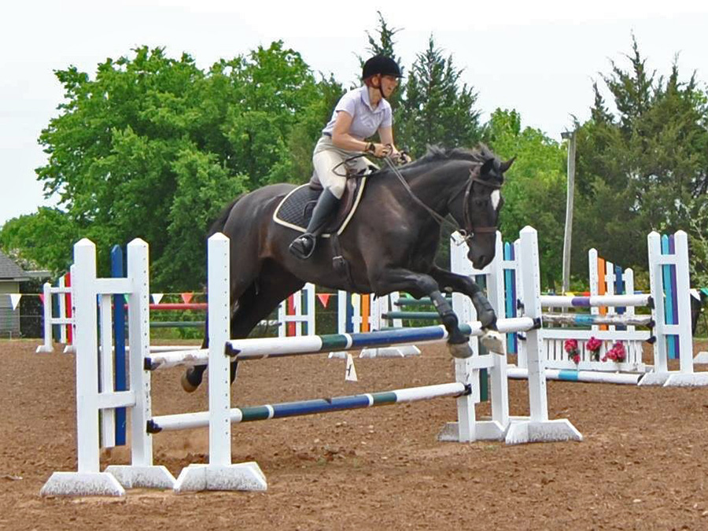

5/17/2014
Jumper
Show on Miaren
We entered the 3' division and had a lot of fun.
I was a little nervous because the jumps looked bigger, but after the
first fence Miaren made it clear that height was not a concern.
We came away with a variety of ribbons and Reserve Champ for the division.
I was most pleased that in the derby he didn't even look at the ditch and
sailed over.

A fun day. The show photographer got some lovely pictures.

Jumping the fences they didn't feel big, but looking at them they sure
looked it.
We had a couple of bad spots. This was the first one, but I held on and
didn't interfere and he got us over without hitting it.
Landing and turning. I got a bit sloppy, but Miaren was in the game and
didn't hold it against me.
The in and out always made me grin. He'd tend to get going too fast and
get too close to the last fence, but he was still careful each time.
Watching for the lead when I should be looking for the next jump.
When I did it correctly he got the lead and we ended up with good spots.
On the derby course. We had one refusal out here, but we weren't the
only one at that particular fence. It was straight forward, but I guess
not to the horses.
A shot after he went over the ditch. I was so pleased
Me getting a little too eager.
Heading for the finish flags.